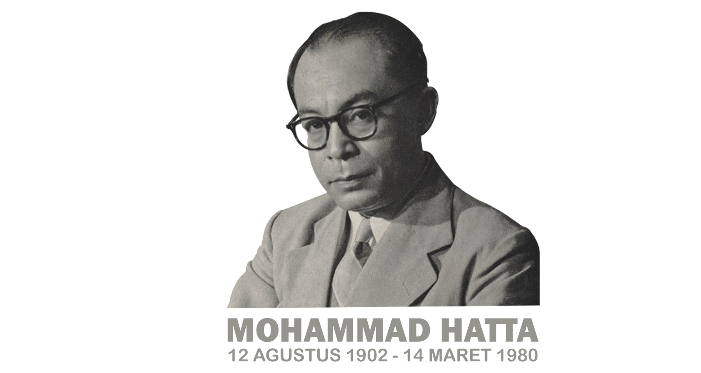
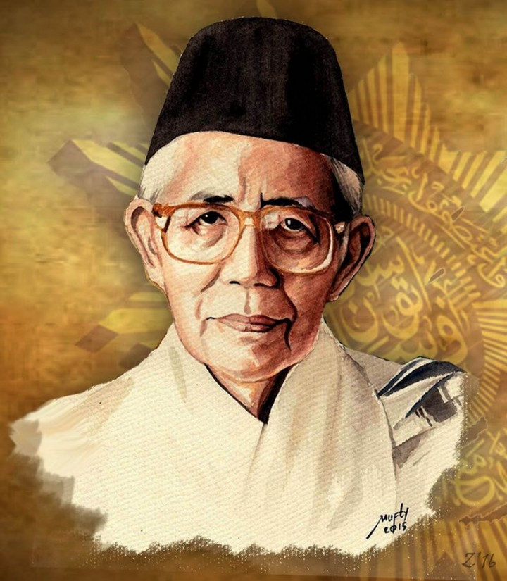
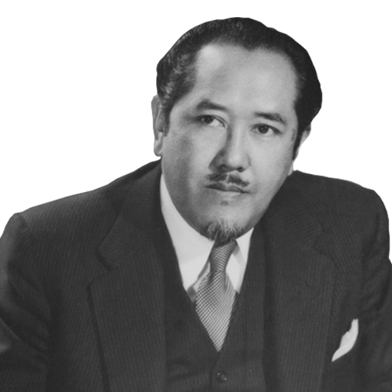
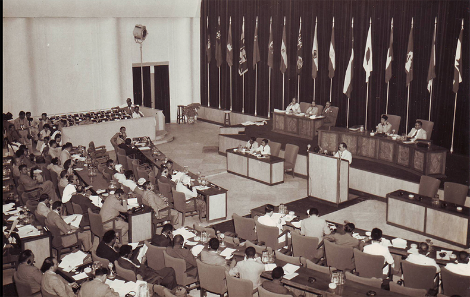

KATA PENGANTAR
Prakata Penulis
Puji dan syukur kita panjatkan ke hadirat Tuhan Yang Maha Esa. E-book interaktif ini disusun sebagai media pembelajaran sejarah yang menarik, ringkas, dan mudah dipahami mengenai salah satu periode paling krusial dalam perjalanan bangsa Indonesia, yaitu Masa Orde Lama (1950–1959).
Melalui e-book ini, pembaca diajak untuk menelusuri bagaimana dinamika politik, pasang surut pemerintahan parlementer, hingga momen-momen bersejarah seperti Pemilu 1955 dan Dekrit Presiden 1959 membentuk fondasi Indonesia modern. Selamat membaca dan menelusuri jejak sejarah bangsa!
Selamat membaca,
Askia Zahra Nurjaman
Penulis & Penyusun E-Book
PENGENALAN SINGKAT
Orde Lama Itu Apa Sih? 🤔
Pernah dengar istilah "Orde Lama" di pelajaran Sejarah? Sebenarnya, apa sih artinya?
Secara sederhana, Orde Lama adalah sebutan untuk masa pemerintahan Presiden Ir. Soekarno yang berlangsung dari tahun 1945 hingga 1966. Istilah ini muncul di kemudian hari untuk membedakan era Soekarno dengan masa pemerintahan Presiden Soeharto yang dikenal sebagai Orde Baru.
💡 Tahukah Kamu?
Masa Orde Lama tidak berjalan monoton! Masa ini dibagi menjadi 3 fase besar:
- Masa Perjuangan Kemerdekaan & RIS (1945–1950): Era mempertahankan kemerdekaan dari agresi militer.
- Masa Demokrasi Liberal / Parlementer (1950–1959): Era dengan sistem multi-partai dan pergantian kabinet yang sangat cepat. (Fokus E-Book Ini!)
- Masa Demokrasi Terpimpin (1959–1966): Era di mana kekuasaan berpusat pada kepemimpinan Presiden Soekarno.
BAB I
Pengertian, Latar Belakang & Tokoh Kunci
Setelah pembubaran Republik Indonesia Serikat (RIS) pada 17 Agustus 1950, Indonesia resmi kembali menjadi Negara Kesatuan Republik Indonesia (NKRI) dengan memberlakukan Undang-Undang Dasar Sementara (UUDS 1950). Momen ini menjadi penanda dimulainya era Demokrasi Liberal/Parlementer.
👥 Tokoh-Tokoh Penting Era Demokrasi Liberal
Perjalanan era Demokrasi Liberal (1950–1959) tidak lepas dari peran para pemimpin dan negarawan besar bangsa. Karena menggunakan sistem pemerintahan parlementer, arah kebijakan dan stabilitas negara sangat ditentukan oleh kerja sama antara Presiden sebagai Kepala Negara dan Perdana Menteri sebagai Kepala Pemerintahan. Berikut adalah tokoh-tokoh kunci yang memegang peranan sentral dalam mengendalikan dinamika politik pada periode ini:

Ir. Soekarno
Kepala Negara: Memegang peran pemersatu bangsa & penentu kebijakan luar negeri di tengah seringnya terjadi pergantian kabinet.

Mohammad Hatta
Wakil Presiden RI (s.d 1956): Mendampingi Presiden dalam menata arah perekonomian serta menjaga stabilitas politik antargolongan.

Mohammad Natsir
Perdana Menteri Pertama: Memimpin kabinet pertama NKRI pasca-RIS & pencetus "Mosi Integral Natsir" kembalinya NKRI.

Ali Sastroamidjojo
Perdana Menteri (Kabinet Ali I & II): Memimpin pemerintahan saat kesuksesan bersejarah Konferensi Asia Afrika (KAA) 1955.
Ciri-Ciri Utama Demokrasi Liberal (1950–1959):
- Sistem Pemerintahan Parlementer: Kepala pemerintahan dipegang oleh Perdana Menteri, sedangkan Presiden bertindak sebagai Kepala Negara.
- Multi-Partai Politik: Kebebasan mendirikan partai politik menyebabkan persaingan antarpartai yang sangat tajam di parlemen.
- Tinggi-Rendahnya Stabilitas Politik: Seringnya mosi tidak percaya menyebabkan kabinet sangat mudah berganti.
BAB II
Dinamika Silih Gantinya 7 Kabinet
Ciri khas yang paling menonjol pada era Demokrasi Liberal adalah ketidakstabilan pemerintahan. Dalam kurun waktu hanya 9 tahun, terjadi pergantian kabinet sebanyak 7 kali akibat persaingan politik antarpartai di DPR:
1. Kabinet Natsir (1950–1951)
Fokus pada penyempurnaan angkatan perang, konsolidasi politik, dan penyerahan Irian Barat.
2. Kabinet Sukiman (1951–1952)
Jatuh karena penandatanganan bantuan militer Mutual Security Act (MSA) dari Amerika Serikat yang dianggap melanggar politik bebas-aktif.
3. Kabinet Wilopo (1952–1953)
Menghadapi peristiwa 17 Oktober 1952 (konflik AD) serta tragedi tanah Tanjung Morawa di Sumatra Utara.
4. Kabinet Ali I (1953–1955)
Meraih prestasi internasional dengan sukses besar menyelenggarakan Konferensi Asia Afrika (KAA) di Bandung.
5. Kabinet Burhanuddin Harahap (1955–1956)
Sukses menyelenggarakan Pemilihan Umum pertama Indonesia dengan sangat demokratis dan relatif aman.
6. Kabinet Ali II (1956–1957)
Secara sepihak membatalkan seluruh hasil Konferensi Meja Bundar (KMB) akibat kebuntuan masalah Irian Barat.
7. Kabinet Djuanda (1957–1959)
Mencetuskan Deklarasi Djuanda yang mengubah konsepsi batas laut teritorial Indonesia dari 3 mil menjadi 12 mil laut.
BAB III
Pemilihan Umum 1955 & Konferensi Asia Afrika
Meskipun kondisi politik nasional bergejolak, era Demokrasi Liberal mencatatkan dua tinta emas dalam sejarah Indonesia, yakni Pemilu 1955 dan Konferensi Asia Afrika (KAA) di Bandung.
📸 Jejak Visual Peristiwa Bersejarah
Dua foto berikut merekam momen puncak kejayaan Indonesia di era Demokrasi Liberal: keberhasilan pelaksanaan demokrasi langsung pertama melalui Pemilu 1955, serta kepemimpinan Indonesia di kancah global melalui KAA 1955.

Presiden Soekarno Menyongsong Pemilu
Momen Pemilu 1955: Presiden Soekarno saat memberikan hak suaranya dalam Pemilu paling demokratis dalam sejarah Indonesia.

Gedung Merdeka Bandung
KAA 1955: Suasana pimpinan dan delegasi negara-negara Asia-Afrika berkumpul di Bandung untuk mencetuskan Dasasila Bandung.
Tahapan Pemilu 1955:
- Tahap I (29 September 1955): Menggunakan sistem perwakilan proporsional untuk memilih anggota DPR.
- Tahap II (15 Desember 1955): Memilih anggota Badan Konstituante yang bertugas merancang UUD permanen.
Hasil Pemilu 1955 memunculkan Empat Partai Besar (Empat Besar): PNI, Masyumi, NU, dan PKI.
BAB IV
Kebijakan & Keadaan Perekonomian
Perekonomian nasional pada era ini terpuruk akibat defisit kas negara, lonjakan inflasi, utang peninggalan KMB, dan dominasi perusahaan asing. Untuk mengatasi hal ini, para menteri ekonomi merumuskan beberapa kebijakan strategis:
Kebijakan Ekonomi Penting:
- Gunting Syafruddin (1950): Menteri Keuangan Syafruddin Prawiranegara memotong uang kertas senilai Rp 2,50 ke atas menjadi dua bagian untuk mengurangi jumlah uang beredar.
- Sistem Ekonomi Ali-Baba (1953): Program kerja sama yang menggabungkan pengusaha pribumi (Ali) dan pengusaha non-pribumi (Baba) guna memajukan kewirausahaan lokal.
- Gerakan Asaat: Kebijakan memberikan perlindungan khusus dan prioritas lisensi bagi para pengusaha pribumi.
BAB V
Krisis Konstituante & Dekrit Presiden 5 Juli 1959
Anggota Dewan Konstituante hasil Pemilu 1955 gagal mencapai kesepakatan dalam menyusun UUD baru karena perbedaan pandangan ideologis yang sangat tajam. Di samping itu, timbul pergolakan daerah (seperti PRRI dan Permesta) yang mengancam keutuhan Indonesia.

Naskah Dekrit Presiden
Bukti Otentik Sejarah: Salinan naskah Dekrit Presiden 5 Juli 1959 yang dibacakan oleh Soekarno untuk mengakhiri UUDS 1950 dan kembali ke UUD 1945.
Tiga Poin Utama Dekrit Presiden 5 Juli 1959:
- Pembubaran Badan Konstituante.
- Kembali ke UUD 1945 dan tidak berlakunya UUDS 1950.
- Pembentukan MPRS (Majelis Permusyawaratan Rakyat Sementara) dan DPAS.
Diumumkannya Dekrit Presiden 5 Juli 1959 secara resmi mengakhiri era Demokrasi Liberal/Parlementer dan membuka babak baru dalam sejarah Indonesia, yaitu Era Demokrasi Terpimpin.